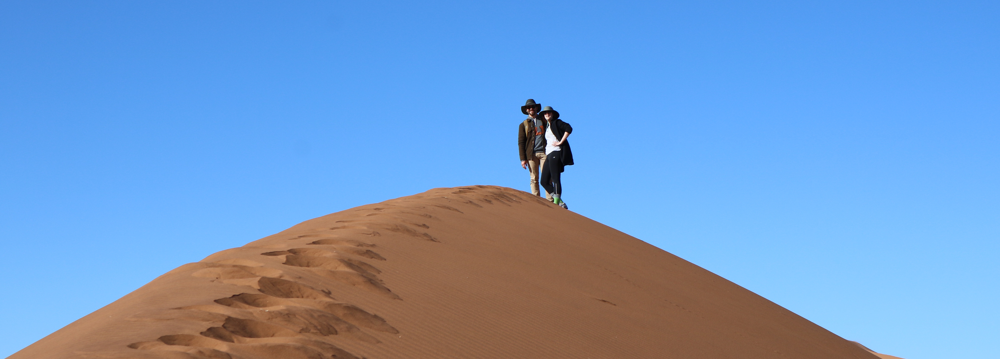

|
Hallie & Kerry in |
|
Southwest Africa |
Welcome to our African adventure!
In August of 2018, we took a break from long hours at work and blazing-hot subway platforms in NYC to explore Namibia and the Western Cape of South Africa.
We hiked and drove through surreal landscapes, saw phenomenal wildlife, ate and drank extremely well, and got to do a lot of it with our expat friends, Ashley and Sam.
Click an icon on the map to see what we saw! Click images in the galleries to see them at full size. 
The largest city in the Western Cape and home of South Africa's Parliament, Cape Town was our first stop. Cape Town is like New York in a couple of ways: Both were founded in the 17th century to protect Dutch trading interests, and today, both have neighborhoods that are too hip for their own good. We loved it!
In three days that went by way too fast, we browsed the Neighbourgoods and Oranjezicht markets, visited Africa's larget modern art museum, and ventured out to tour the Cape Peninsula.
To close the first South African chapter of the trip, we took a scenic drive south of Cape Town to the Cape Peninsula. There we met the famous penguins of Boulders Beach, toured the seaside hamlets of Simon's Town, Kalk Bay, and St. James, and had an amazing lunch at the Olympia Cafe.
Our first stop in Namibia was the capital, Windhoek, to stay with Ashley and Sam before hitting the road to explore the rest of the country. For two days we moved at a very Windhoek pace — that is to say, we took it easy — touring the city, lounging on Ashley and Sam's patio, and hanging with the most important canine members of the US diplomatic mission in Namibia: Tucker and Ollie.
Just north of Windhoek is a game reserve and lodge called Okapuka. This is where we got our first look at the animals we would come to be very familiar with in the coming week. The lodge's bar overlooks a manicured lawn with roaming ostriches and warthogs. A guided drive through the reserve introduced us to springbok, sable, giraffes, and zebras.
The park also has one female white rhino, Lily, with whom we were lucky enough to cross paths. Sadly, Okapuka lost their last male rhino to disease last year, so Lily settles for the company of warthogs for now.
Our first day of driving into the Namib Desert took us across the Tropic of Capricorn and through the stunning Remhoogte Pass. With our butts still vibrating from the rough roads, we stopped at the Weltevrede Guest Farm to spend the night. Weltevrede is a quaint lodge isolated in the desert that serves a mean minced springbok casserole.
Solitaire is an oasis of gasoline, western food, and hokey souvenirs that, despite its remote location, can serve thousands of tourists per day. We stopped to devour cheeseburgers and take a well-deserved break from the rumbling Land Rover before moving on to Weltevrede Guest Farm.
After a phenomenal day walking the dunes of Sossusvlei, we headed to Dune Star Camp, on the edge of Namib-Naukluft National Park. Dune Star is a collection of small cabins on the crest of a hill, each with a patio overlooking the surrounding desert. Despite overnight temperatures among the coldest on record in this part of the world, we wheeled our bed out onto the patio to sleep under the stars.
Sossusvlei is an ancient salt flat surrounded by giant red sand dunes in Namib-Naukluft National Park. Entering the park before sunrise to beat the crowds, we spent an incredible day hiking the dunes, driving the Land Rover through sandy trails, and spotting wildlife.
Swakopmund is a coastal resort city just north of Walvis Bay. The feel of the town is a campy mix of Myrtle Beach and Bavaria. I guess the common thread there is drinking, so we had fun. But most memorable was an ATV excursion in the never-ending dunes just outside of town.
Following a tip from a friend, we booked a morning kayaking trip at Pelican Point, the tip of a peninsula that juts out on the west side of Walvis Bay. Pelican Point is famous not for pelicans, but for a colony of thousands of seals that thrives there with no natural predators. While the adult seals lazily idle on the beach, the pups have become accustomed to playing with kayakers in the bay.
Some seal pups followed kayaks around with mild curiosity, while others gnawed on paddles and, when given the opportunity, arms. Sam even managed to rescue a pup who had become tied up in fishing line, whom we lovingly named Tyler. I suspect Tyler is telling the tale to other kayakers to this day.
The last stop on our Namibian road trip was the Mount Etjo Safari Lodge in the Okonjati Game Reserve. In six hours of game drives over two days, we found hippos, giraffes, and several species of antelope. The highlights, of course, were the dik diks—tiny antelopes that look a bit like our dog, Rookie—and a small but lively herd of elephants. We were also treated to an after-dinner show: lions feeding on a horse carcass, which we watched from an allegedly lion-proof bunker a few feet away.
With nearly 1,000 miles of rough Namibian roads behind us, we went back to South Africa for some R&R in Franschhoek, one of the country's famous wine regions. We stayed in a tiny cottage on the grounds of a picturesque vineyard, and became fast friends with the owner's dogs, Pepsi and Cola.
We loved the wine, but also found stunning scenery and the best restaurant meals of the trip.